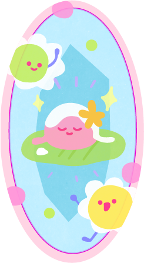
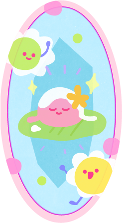

ขนมช่อม่วง
"ขนมช่อม่วง"
จัดได้ว่าเป็นขนวมชาววังตั้งแต่
สมัยกรุงรัตนโกสินทร์ตอนต้นในพระบาท
สมเด็จพระพุทธเลิศหล้านภาลัย
รัชกาลที่
2


"ช่อม่วงเหมาะมีรส
หอมปรากฏกลโกสุม
คิดสีสไบคลุม
หุ้มห่อม่วงดวงพุดตาน"
กาพย์แห่ชมเครื่องคาว-หวาน
บทพระราชนิพนธ์พระบาท
สมเด็จพระพุทธเลิศหล้านภาลัย
ล้นเกล้ารัชกาบที่
2
ช่อม่วงนั้นมีวิธีทำที่คล้ายกับ
'ขนมจีบนก'หรือเรียกกันว่าขนมไส้หมู
ในยุคนั้น
จึงสันนิฐานว่าช่อม่วงเป็นขนม
ขาววังที่ถูกดัดแปลงมาจาก'ขนมจีบไทย'
ที่มี'กรมหลวงนรินทรเทวี'เป็นผู้ริเริ่ม
ในสมัยรัชกาลที่ 2
เมืองไทยคับคั่งด้วยคนต่างชาติ
จึงได้รับอิทธิพลด้านอาหารการกินมาผสานกับวิธีไทย
มีอาหารประเภทเนื้อสัตว์อย่าง
ไก่ เป็ด หมู แพะ
และแกะเพิ่มมากขึ้นกว่าสมัยอยุธยาที่นิยมกิน
แต่ปลา เต่า กุ้ง และหอย


 
